پروژه وب اپلیکیشنی که با هدف ایجاد یک فضای تعاملی و جذاب برای یادگیری و کاوش در دنیای عناصر شیمیایی طراحی شده است. ما در این آزمایشگاه مجازی، سعی کردهایم تا مفاهیم پیچیده مربوط به ساختار اتمی عناصر را به زبانی ساده و بصری ارائه دهیم
در آزمایشگاه عناصر، شما میتوانید به سادگی تعداد پروتونها، نوترونها و الکترونهای هر عنصر را تغییر دهید و شاهد دگرگونی آن عنصر به عنصری دیگر باشید. این رویکرد تعاملی به شما کمک میکند تا درک عمیقتری از جدول تناوبی و ارتباط بین ذرات زیر اتمی و هویت عناصر به دست آورید. تصور کنید، با چند کلیک ساده میتوانید به صورت بصری ببینید که چگونه تغییر تعداد پروتونها نه تنها بار هسته را عوض میکند، بلکه ماهیت عنصر را به طور کامل تغییر میدهد
این پروژه، حاصل تلاش و اشتیاق دو دانشآموز علاقهمند به علم شیمی، محمد رشنو و حمیدرضا سپهوند است. ما با هدف تسهیل یادگیری مفاهیم شیمی برای دانشآموزان و علاقهمندان به علم، این آزمایشگاه مجازی را ایجاد کردهایم. امیدواریم آزمایشگاه عناصر بتواند دریچهای نو به سوی دنیای جذاب و پیچیده عناصر برای شما باز کند و تجربهای لذتبخش و آموزنده را برایتان فراهم آورد
از اینکه آزمایشگاه عناصر را برای کاوش در دنیای عناصر انتخاب کردهاید، سپاسگزاریم! برای مشاهده کدها و اطلاعات بیشتر، میتوانید به مخزن گیتهاب محمد رشنو مراجعه کنید